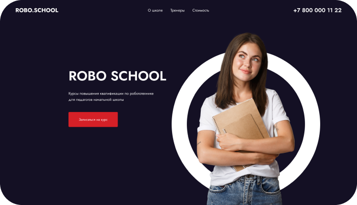
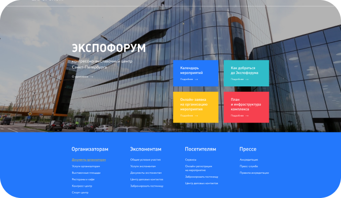

robo school
Простой одностраничный макет.
Был свёрстан нa Flexbox. Также в
макете был использован слайдер,
который я реализовал при помощи
swiper.js.
Адаптива для сайта нет, так как эта технология еще в изучении.

expoforum
Такой же простой одностраничник.
Свёрстан на Margin и Padding. Тогда я ещё
не знал про Flexbox.
Адаптива, как в первом варианте, также
нет.